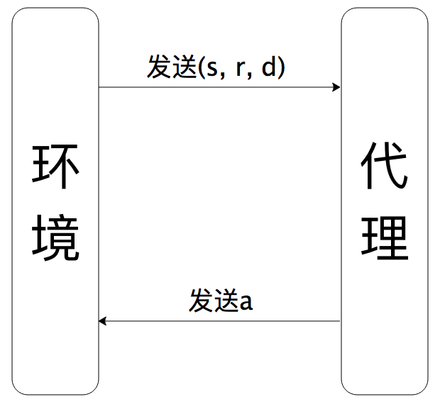
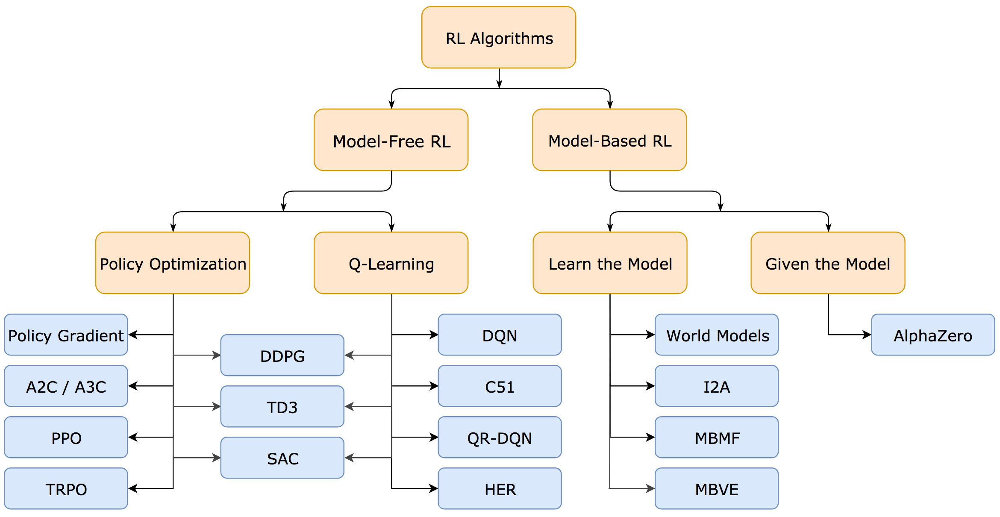

(一)强化学习简介
机器学习可分为有监督学习，无监督学习以及强化学习。强化学习是机器学习的一个重要领域，强化学习可以简单理解为代理(agent)在
环境(environment)中采取行动(action)并得到奖励(reward)来扩充自己的知识储备，使得自己在环境中有更好的表现，
得到更多的回报(return)。
最近几年，强化学习大放异彩，被认为是最接近于人工智能的算法，著名的事件有AlphaGo夺得
围棋冠军、OpenAI在dota2中击败半职业战队等。
1.强化学习过程
强化学习背后的思想就是agent通过与环境进行交互并从中学习，然后利用学习到的知识尽可能获得更多的回报。具体过程为：agent根据当前所
处的状态st作出相应的决策/行动at后，环境进入到新的状态st+1，agent从
环境中获得信息(st+1, at, dt)，分别表示(下一个状态，当前行动的奖励，
下一状态是否为终止状态)，agent再根据新的状态st+1进行决策/行动，交互过程反复进行，直到到达终止状态sT，
如图1所示；强化学习算法就是利用agent与环境交互得到的信息(st, at, rt, dt, st+1)建立模型，
使agent在环境中获得最大的期望累积回报。

图1 代理与环境的交互过程
2.强化学习算法中的关键概念
(1)状态(state)和观测(observation)
状态是对当前环境的完全描述，而观测是对当前环境的部分描述；有些问题中，我们所能得到的观测就是状态，但多数情况下我们并不能获得状态， 而只能观测到环境的部分信息，以英雄联盟(LOL)游戏来举例，状态就是当前时刻敌方和我方所处的情况，在游戏进行中，我们只能在地图中观测 到我方视野可见区域的情况，对于我方不可见的区域(或称为被战争迷雾笼罩的地方)我们无法观测到那里的状况，因此没有办法获得当前环境的完 全描述，只能获得当前环境的部分描述。在此之后，我们不再区分我们获得的信息是状态s还是观测o，一律称为状态。
(2)行动空间(action space)
不同的环境允许不同的种类的行动，所有合法行动的集合构成了该环境的行动空间。行动空间包括离散行动空间和连续行动空间，例如棋类游戏 (围棋、五子棋)和街机类游戏(超级玛丽，打砖块)的行动空间是离散行动空间；自动驾驶任务中方向盘的旋转角度构成的行动空间是连续行动空间。
(3)策略(policy)
策略是状态s的函数，表示在当前状态下agent将要采取的行动，策略分为确定型策略和随机型策略。
确定型策略：
随机型策略：
随机型策略中，如果行动空间是离散型行动空间，则策略函数是一个离散型分布；否则是连续型分布，通常使用正态分布。
(4)轨迹(trajectory)
轨迹是{状态，行动}对的序列，表示了agent与环境交互中所经历的过程。
其中表示环境随机进入到
某个初始状态，这个状态是从状态分布中随机抽取得到的；当agent采取了某个行动后，环境会从当前状态转移到下一个状态，状态转移分为两种：确定性转移和随机性转移。
确定性转移：
随机性转移：
(5)奖励(reward)和回报(return)
奖励函数在强化学习算法中至关重要，因为它是决定模型朝什么方向发展的航标。奖励函数定义为：
强化学习的任务就是要最大化整个轨迹上的期望累计回报，累计回报定义为：
然而在实际中，更常使用累计折扣回报。
累计折扣回报源于生活中的经验：未来的现金不如现在的现金值钱；以及数学处理上的方便：无穷级数直接求和可能不收敛，加上折扣因子后级数会收敛到某个数值。
(6)价值函数(value)和行动价值函数(action-value)
价值函数定义了agent从环境中的某个状态s出发，可以获得的期望回报，即
行动价值函数定义了agent在环境中的某个状态s下采取行动a后可以获得的期望回报
(7)优势函数(advantage)
优势函数定义了agent在环境中的某个状态s下采取行动a时，相对于随机采取行动所能获得的额外回报，即
3.强化学习算法分类
强化学习算法可以分为两大类：基于模型的算法(Model-Based)和免模型的算法(Model-Free)，这里的模型指的是对环境进行建模，最著名的代
表是DeepMind的AlphaZero。
我们主要介绍免模型的强化学习算法。免模型的强化学习算法分为两大阵营，分别是
- 以DeepMind为代表的基于价值的强化学习算法
- 以OpenAI为代表的基于策略的强化学习算法

图2 强化学习算法生态体系
(来源:https://spinningup.openai.com/en/latest/spinningup/rl_intro2.html)